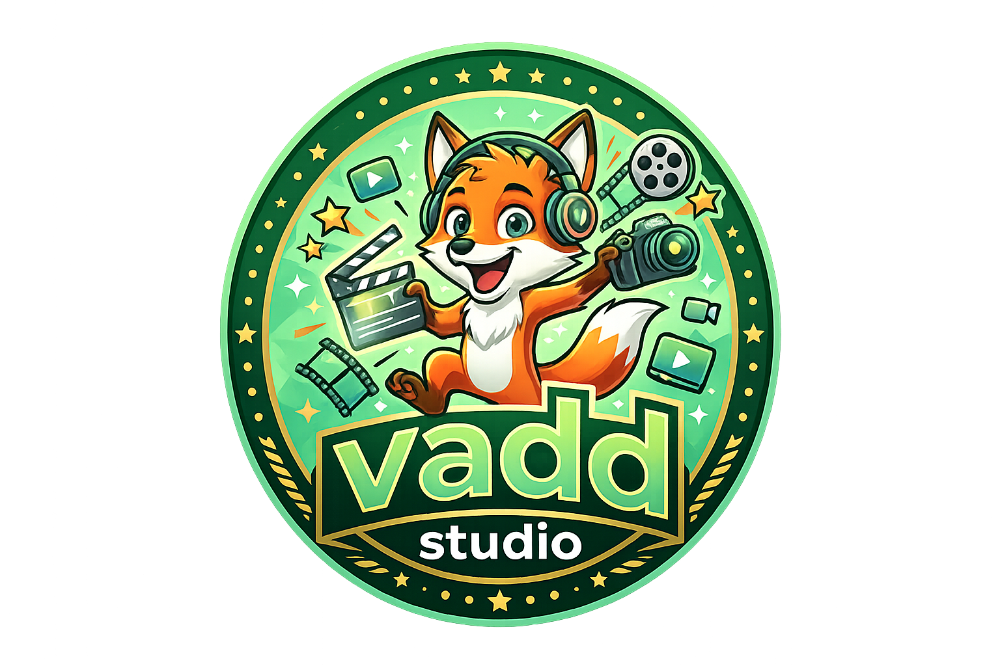

<!-- Navbar Atas -->
<nav id="navbar">
    <div class="nav-container">
        <div class="nav-left">
            <button class="menu-btn" id="mobile-menu-btn" aria-label="Buka Menu">
                <i class="fas fa-bars"></i>
            </button>
            <a href="index.html" class="brand-logo">
                
                <span class="brand-text">vadd<span>anime</span></span>
            </a>
            <!-- Temukan bagian desktop-menu dan ubah menjadi ini -->
            <div class="desktop-menu">
                <a href="index.html" class="active">Jelajahi</a>
                
                <!-- DROPDOWN KATEGORI (BARU) -->
                <div class="desktop-dropdown-container">
                    <a href="#" class="desktop-dropdown-toggle">Kategori <i class="fas fa-chevron-down" style="font-size: 0.6rem;"></i></a>
                    <!-- Wadah daftar genre desktop -->
                    <div class="desktop-dropdown-menu" id="desktop-genre-list">
                        <span style="color:#9ca3af; font-size:0.85rem; padding: 10px;">Memuat kategori...</span>
                    </div>
                </div>

                <a href="#">Film Pendek</a>
                <a href="#">Berita</a>
            </div>
        </div>
        <div class="nav-right">
<div class="nav-right-icons">
    
    <!-- FITUR PENCARIAN (BARU) -->
    <div class="search-container">
        <button aria-label="Pencarian" id="btn-search-icon"><i class="fas fa-search"></i></button>
        <div class="search-input-wrapper" id="search-input-wrapper">
            <input type="text" id="search-input" placeholder="Cari judul..." autocomplete="off">
            <button id="btn-close-search" aria-label="Tutup"><i class="fas fa-times"></i></button>
        </div>
    </div>
                
                <!-- CONTAINER PROFIL USER -->
                <div class="user-profile-container" style="position: relative;">
                    <button class="user-avatar" id="btn-user-avatar" aria-label="Profil" style="cursor: pointer;">
                        <i class="fas fa-user"></i>
                    </button>
                    
                    <!-- DROPDOWN MENU PROFIL (Tersembunyi secara default) -->
                    <div id="profile-dropdown" class="profile-dropdown-menu" style="display: none;">
                        <div class="profile-header">
                            <span id="user-display-name" style="font-weight: bold; font-size: 14px; color: white; display: block;">Guest</span>
                            <span id="user-display-email" style="font-size: 11px; color: #9ca3af;">Silakan Login</span>
                        </div>
                        <hr style="border-color: #1a3a26; margin: 5px 0;">
                        <a href="auth.html" id="menu-login" class="dropdown-item"><i class="fas fa-sign-in-alt"></i> Masuk / Daftar</a>
                        <a href="daftarku.html" id="menu-daftarku" class="dropdown-item" style="display:none;"><i class="fas fa-bookmark"></i> Daftarku</a>
                        <a href="admin.html" id="menu-admin" class="dropdown-item" style="display:none;"><i class="fas fa-tachometer-alt"></i> Dashboard Admin</a>
                        <button id="menu-logout" class="dropdown-item" style="display:none; width: 100%; text-align: left;"><i class="fas fa-sign-out-alt"></i> Keluar</button>
                    </div>
                </div>

            </div>
        </div>
    </div>
</nav>

<!-- Sidebar Drawer -->
<div id="sidebar-overlay"></div>
<div id="sidebar-drawer">
    <div class="sidebar-header">
        <div class="brand-logo">
            
            <span class="brand-text" style="font-size: 1.1rem;">vadd<span>anime</span></span>
        </div>
        <button id="sidebar-close-btn" class="sidebar-close"><i class="fas fa-times"></i></button>
    </div>
    
    <div class="sidebar-body">
        <!-- Section Menu Utama -->
        <div>
            <p class="sidebar-group-title">Menu Utama</p>
            <div class="sidebar-menu-list">
                <a href="index.html" class="sidebar-item active"><i class="fas fa-compass" style="width:20px;"></i> Jelajahi</a>
                <a href="popular.html" class="sidebar-item"><i class="fas fa-fire" style="width:20px; color:var(--vadd-accent);"></i> Sedang Populer</a>
                <a href="lates.html" class="sidebar-item"><i class="fas fa-clock" style="width:20px; color:var(--vadd-light);"></i> Rilis Terbaru</a>
                <a href="daftarku.html" class="sidebar-item"><i class="fas fa-bookmark" style="width:20px; color:var(--vadd-light);"></i> daftarku</a>                
            </div>
        </div>

        <!-- Section Kategori / Genre (BARU) -->
        <div style="margin-top: 1.5rem;">
            <p class="sidebar-group-title">Kategori</p>
            <div id="sidebar-genre-list" class="sidebar-genre-grid">
                <span style="color:#9ca3af; font-size:0.85rem; padding: 0 10px;">
                    <i class="fas fa-spinner fa-spin"></i> Memuat kategori...
                </span>
            </div>
        </div>
    </div>
    
    <div class="sidebar-footer">
        <p>Vadd Studio v1.0.0</p>
    </div>
</div>


<!-- TARGET KONTEN HALAMAN -->
<div id="main-content-target"></div>

<!-- Footer Bawah -->
<footer class="footer">
    <div class="footer-container">
        <div class="footer-grid">
            <div>
                <a href="index.html" class="brand-logo" style="margin-bottom: 1rem;">
                    
                    <span class="brand-text" style="font-size: 1.25rem;">vadd<span>studio</span></span>
                </a>
                <p class="footer-desc">Platform streaming animasi & film independen terbaik.</p>
                <div class="social-icons">
                    <a href="#"><i class="fab fa-facebook"></i></a>
                    <a href="#"><i class="fab fa-instagram"></i></a>
                    <a href="#"><i class="fab fa-youtube"></i></a>
                    <a href="#"><i class="fab fa-telegram"></i></a>
                </div>
            </div>
            <div>
                <h4 class="footer-col-title">Navigasi</h4>
                <ul class="footer-links">
                    <li><a href="#">Populer</a></li>
                    <li><a href="#">Rilis Terbaru</a></li>
                </ul>
            </div>
            <div>
                <h4 class="footer-col-title">Bantuan</h4>
                <ul class="footer-links">
                    <li><a href="#">FAQ</a></li>
                    <li><a href="#">Hubungi Kami</a></li>
                </ul>
            </div>
        </div>
        <div class="footer-bottom">
            <p class="copyright">&copy; 2026 Vadd Studio. Hak Cipta Dilindungi.</p>
        </div>
    </div>
</footer>
